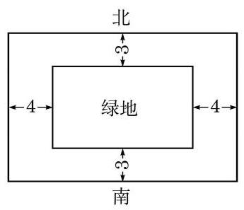
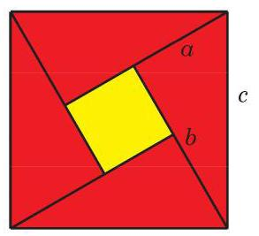

例题 1
例 1 已知 ,求证: ,并指出等号成立的条件.
学生阅读版 / 沪教版高中数学
必修第一册
第2章等式与不等式 · 保留教材主线与原题
教材与正式教参整合
对于正数 ,称 是 的算术平均值 (arithmetic mean),并称 是 的几何平均值 (geometric mean). 当 分别表示对同一个量进行两次测量所得的数值时,其算术平均值 可以理解为这两次测量值的平均. 当 分别表示一个矩形的两边边长时,其几何平均值 可以理解为与此矩形面积相同的正方形的边长.
下面的不等式是经典的平均值不等式:
定理(平均值不等式) 两个正数的算术平均值大于等于它们的几何平均值,即对于任意的正数 ,有
且等号当且仅当 时成立.
证明 因为
所以
而且当且仅当 即 时,不等式中等号成立.
例 1 已知 ,求证: ,并指出等号成立的条件.
例 2 已知 ,求证: ,并指出等号成立的条件.
例 3 设 ,求二次函数 的最大值.
例 4 设 为正数,且 ,比较 的值与 的大小.
例 5 证明:
(1)在周长为常数的所有矩形中, 正方形的面积最大;
(2)在面积相同的所有矩形中,正方形的周长最小.
例 6 某新建居民小区欲建一面积为 的矩形绿地, 并在绿地四周铺设人行道. 设计要求绿地外南北两侧人行道宽 3 m，东西两侧人行道宽 4 m，如图 2-3-1 所示(图中单位:m). 问如何设计绿地的边长, 才能使人行道的占地面积最小. (结果精确到 )

图 2-3-1
在后续向量、复数等内容的学习中, 下述三角不等式将起着重要的作用, 且其几何意义将十分明显.
Q
定理(三角不等式) 两个实数和的绝对值小于等于它们绝对值的和，即对于任意给定的实数 ，有
且等号当且仅当 时成立.
? 证明 因为 等价于
即 ,也即 ,所以三角不等式成立,且等号当且仅当 时成立.
例 7 已知 为实数,求证: .
例 8 已知 为实数，求证: ，并指出等号成立的条件.
例 9 证明: 对所有实数 恒成立, 并求等号成立时 的取值范围.
(1) ； (2) .
A. ; B. ;
C. ; D. .
求证: .

图 2-3-2
图 2-3-3
赵爽运用图形割补后面积不变的原理, 通过构造相应的几何图形来证明勾股定理. “按弦图，又可以勾股相乘为朱实二，倍之为朱实四，以勾股之差自相乘为中黄实，加差实,亦成弦实.” 其证明过程可用字母表示为 ,化简即得勾股定理
弦图不仅能用于证明等式, 也能用于证明不等式. 事实上, 利用弦图得到的等式 ，可推出: ，且等号当且仅当 时成立.
运用这样的想法,我们可以由等式出发证明一些不等式. 例如,容易证明 成立. 由此,可以推出: 对于非负实数 ,有 ,且等号当且仅当 时成立. 又如,由 ,可以推得: ,且等号当且仅当 时成立.
请仿照上述例子,计算 ,并看由此能否得到一个相应的不等式.